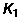
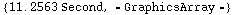
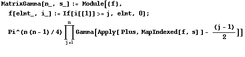

The Matrix K-Bessel Function
Created: June 30, 2005
Last modified: June 30, 2005
Definition
The matrix K-Bessels function have this definition
for V, W∈ and s∈, or W singular with Re()suitably restricted (Terras2, 51).


when m = 1, we can compute indirectly by
(s|a, b)= 2 (2), for a, b>0, s∈C. (Terras2, 52)
(2), for a, b>0, s∈C. (Terras2, 52)

Here, we increase the imaginary part of s,

when m = 2,
![K2[s_, A_, B_] := NIntegrate[v^(s[[1]] + s[[2]] - 1/2) w^(s[[2]] - 3/2) Exp[-v A[[1, 1]] - 2 ... B[[1, 2]])/w - B[[2, 2]]/w], {w, 0, ∞}, {v, 0, ∞}, {x, -∞, ∞}] ](HTMLFiles/index_28.gif)
when m = 3,  has 6 integrals and Mathematica seems not to be able to compute this. However, if has singular argument i.e. the second matrix argument has det 0, there is an easier way to compute it using this formula.
has 6 integrals and Mathematica seems not to be able to compute this. However, if has singular argument i.e. the second matrix argument has det 0, there is an easier way to compute it using this formula.
where  (
(
)= (V)(W)|W, ∈
V
0
0
W
 , ∈, V∈
, ∈, V∈ , W∈, and A[B] stands for the function InverseIwasawa, and stands for the MatrixGamma function.
, W∈, and A[B] stands for the function InverseIwasawa, and stands for the MatrixGamma function.

The following is a plot of SingularK3
Complexity
as λ →∞ where λ is the smallest eigenvalue in the set of eigenvalues of V and W.

Problems
As yet, the plots of K2 and K3 take too long to output.
References
Terras, Audrey. Harmonic Analysis on Symmetric Spaces and Applications, Vols.I, II, Springer-Verlag, N.Y., 1985, 1988.
| Created by Mathematica (August 3, 2005) |